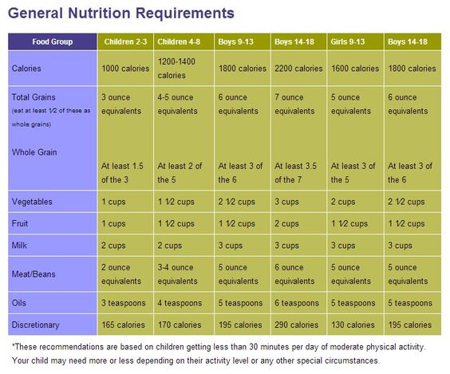

Starting Solids
Between 4-6 months, your baby will start sitting in a tripod position/sitting up
with support,
transferring objects from one hand to another, putting things in the mouth, and even
trying to
grab your food! Now your baby is ready to try solid foods. Before starting solids,
there are a
few rules to follow:
- Do not give honey until your child turns 1 year of age.
- No popcorn until 4 years of age.
- Know how to perform the Heimlich maneuver.
- Do not leave your baby unattended with food.
-
Smash or cut circular pieces of food to avoid choking hazards.
- Speaking of choking hazards, being CPR trained is a great idea!
- Do not give your baby rice cereal, just real foods.
- Baby-led weaning should be just that, BABY-LED. Some babies can gum soft pieces
while others gag
on anything thicker than pureed. Make sure your baby has the ability to gum or
chew foods.
- Put only a few pieces of food on your baby’s tray because they often have a
tendency to
“squirrel” food in their cheeks. You want your baby to learn to take one piece
and swallow
before picking up another piece of food.
What foods should my baby
Eating?
"At this point you would give complementary foods: Animal source foods,
including meat, fish, or eggs, should be consumed daily. Fruits and vegetables
should be consumed,
and pulses, nuts and seeds should be consumed frequently, particularly when meat,
fish, or eggs and vegetables are limited in the diet. Avoid processed, starchy
foods. Add fats such as avocados, olive oil, cheese, etc."
"Start with 1 meal per day. If your baby does not thrust the food away with their
tongue, then offer anywhere from 1-2 spoons to ¼ cup of food. The food should be
thick enough to fall off the spoon. Many babies dislike bland foods, so add your
spices! If your child dislikes a food,
offer it every other day for 2-3 weeks while alternating the other days with foods
that they like. This repeated exposure will usually help them tolerate the foods
better."
"Start with 1 meal per day. If your baby does not thrust the food away with their
tongue, then offer anywhere from 1-2 spoons to ¼ cup of food. The food should be
thick enough to fall off the spoon. Many babies dislike bland foods, so add your
spices! If your child dislikes a food,
offer it every other day for 2-3 weeks while alternating the other days with foods
that they like. This repeated exposure will usually help them tolerate the foods
better."
"Start with 1 meal per day. If your baby does not thrust the food away with their
tongue, then offer anywhere from 1-2 spoons to ¼ cup of food. The food should be
thick enough to fall off the spoon. Many babies dislike bland foods, so add your
spices! If your child dislikes a food,
offer it every other day for 2-3 weeks while alternating the other days with foods
that they like. This repeated exposure will usually help them tolerate the foods
better."
"Start with 1 meal per day. If your baby does not thrust the food away with their
tongue, then offer anywhere from 1-2 spoons to ¼ cup of food. The food should be
thick enough to fall off the spoon. Many babies dislike bland foods, so add your
spices! If your child dislikes a food,
offer it every other day for 2-3 weeks while alternating the other days with foods
that they like. This repeated exposure will usually help them tolerate the foods
better."
How much should they eat?

Breastfeeding or formula feeding should continue during this time.
As solid food intake increases, your baby will self-wean from breastfeeds. After
a year, you may notice your child is feeding only 2-4 times per day total.
For formula fed babies, your soon-to-be toddler should wean to about 16-18oz and
transition to whole cow’s milk by 1 year of age. You should limit cow’s milk to
16-18oz per day to avoid anemia. Breastfed babies do not need cow’s milk.
If breastfeeding, your baby will need more iron when starting solids. You can
give iron supplements of 15mg of elemental iron per day or give iron rich foods
that equal to about 10-11mg of iron.
When your baby turns one year, you want to start supplementing with Vitamin D
800 IU/day.